Mosaico.
En nuestra tienda/showroom de pavimentos y revestimientos podemos ofrecerte infinidad de mosaicos de todos los formatos y colores, para poderlos combinar con madera, mármol o vidrio, entre otros, jugando con los volúmenes y las calidades cromáticas.
Si lo prefieres, podemos también proponerte mosaicos digitales con los que, a partir una fotografía, podrás personalizar cualquier tipo de espacio, aportándole carácter y diferenciación.
Ven a conocer nuestra oferta, regístrate en la newsletter, y síguenos en redes sociales para estar al día de consejos y proyectos en los que participamos, así como de novedades, alguna de las cuales puedes ver a continuación.
Marcas en el showroom
- Trend
- Sicis
- Dune
- Bärwolf
- Bisazza
- Natur
- Cr+
- Kerion
Y si lo que buscas no está en exposición, lo buscamos en la Bagnoteca.
Novedades 202622

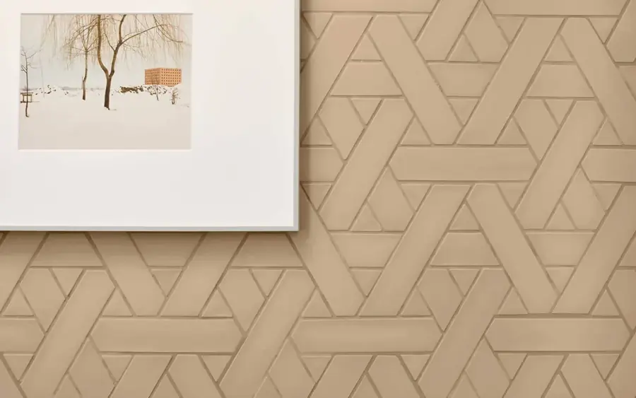
MosaicoLos mosaicos de gran formato casi siempre delatan que son en serie
Por muy bien resuelto que esté el diseño, en cuanto las piezas empiezan a repetirse, el conjunto pierde textura. El ojo lo capta enseguida, aunque no sepa explicar por qué.
Neri & Hu lo resuelven distinto en Weaving, la nueva serie de Mutina que reinterpreta el trenzado tradicional de bambú en un lenguaje gráfico contemporáneo.
Cada pieza se produce con moldes individuales y se desmoldea a mano, lo que genera irregularidades en los bordes que hacen única cada unidad.
Tres patrones geométricos —San Jiao, Si Fang y Ba Leng—, cinco pastas coloreadas en masa, porcelánico apto para pavimento y revestimiento, formatos de 34,3×34,3 / 35,7×20,3 / 42,9×30,3 cm y 9 mm de grosor.

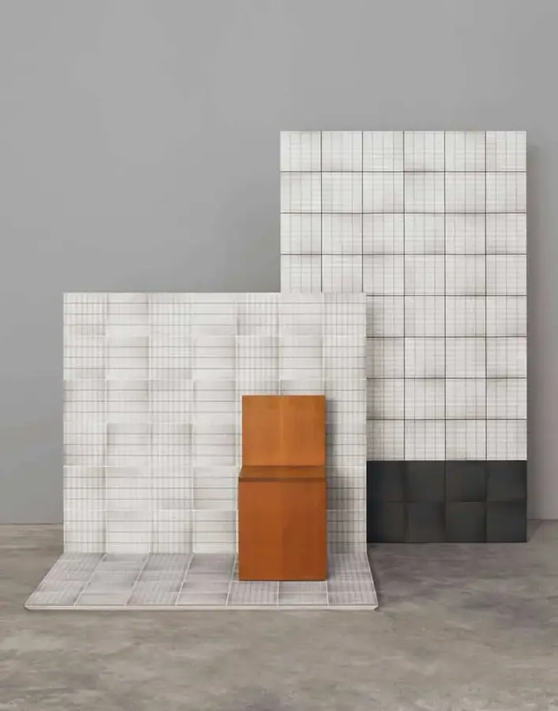
MosaicoBaldosas de gres porcelánico Aurora – Mutina
Colección de baldosas en gres porcelánico esmaltado en formato 20×20cm para suelos y paredes, con tres opciones: liso en color sólido, malla fina (Grid S) y malla ancha (Grid L).
Disponible en cuatro tonos suaves (azul, verde, gris y carbón), permite combinaciones tonales o contrastadas para espacios que buscan equilibrio e intimidad.
Diseñada por el arquitecto Vincent Van Duysen, su inspiración en los dibujos que los niños trazan con tiza en las aceras, aporta una estética contemporánea llena de sensibilidad.

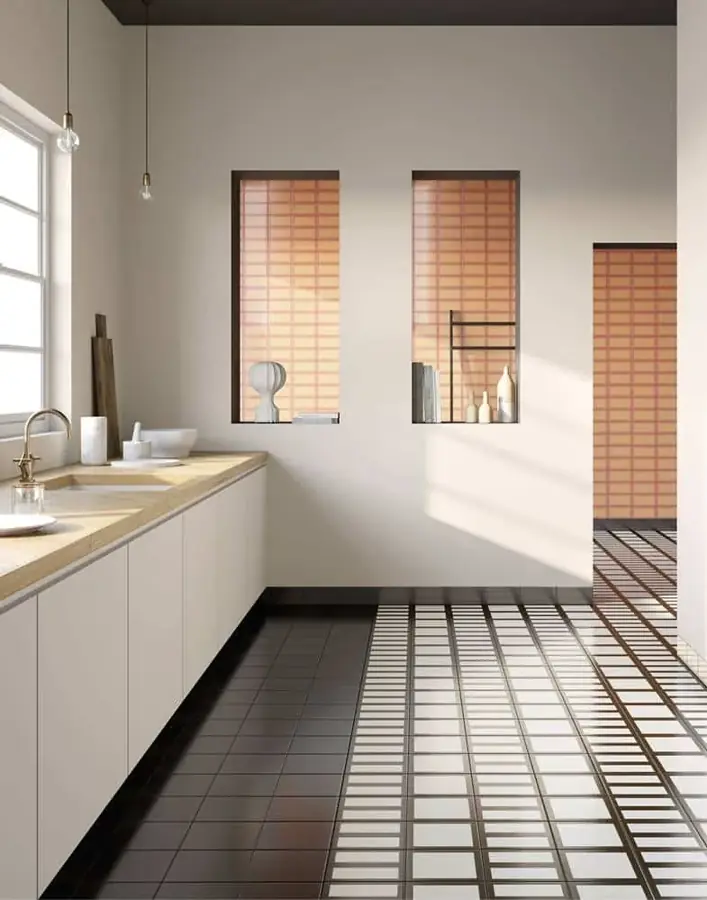
MosaicoAzulejos Mattonelle Margherita - Mutina
Colección de gres porcelánico esmaltado satinado, diseñada por Nathalie Du Pasquier y galardonada con el premio “Interior Design’s Best of Year 2021”.
Pensada especialmente para quienes se permiten jugar, combina 41 motivos entre lisos y decorados en formato cuadrado (20,5cm x 20,5cm) y rectangular (20,5 × 10,1 cm).
Con patrones gráficos hechos a mano, facilita crear diseños personalizados de gran impacto visual.
Su durabilidad, bajo mantenimiento y opción antideslizante la hacen ideal para proyectos tanto residenciales como comerciales.
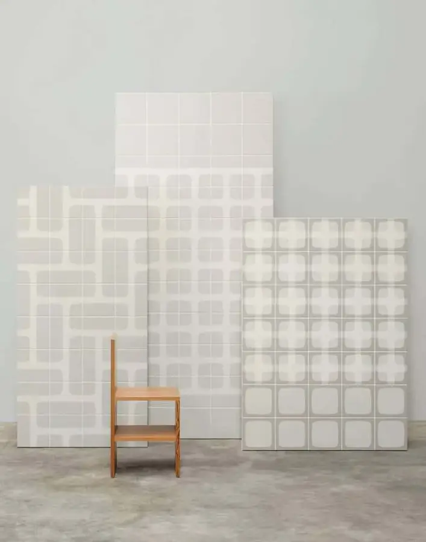
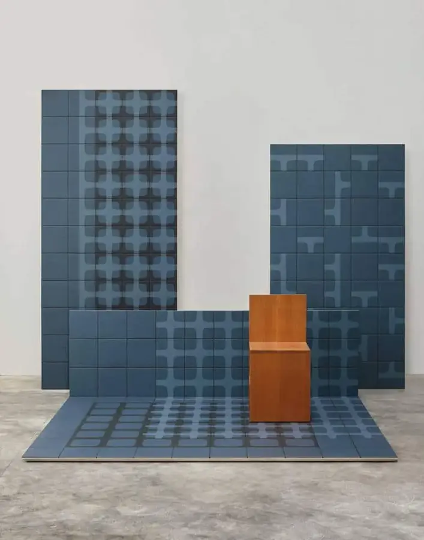
MosaicoMosaicos - azulejo de cemento 20x20 Betty - Mutina
Betty reinterpreta el azulejo de cemento clásico con un lenguaje contemporáneo que lo convierte en elemento decorativo.
Disponible en formato 20×20 cm y en tres tonos sobrios (cemento, rubor y azul noche), la colección combina una pieza lisa con cuatro patrones geométricos que permiten composiciones personalizadas.
Desde cuadrículas y espigas hasta efectos ópticos. Su modularidad ofrece gran libertad de diseño.
Una solución versátil para proyectos que buscan texturas con carácter y profundidad visual en pavimentos o paredes.
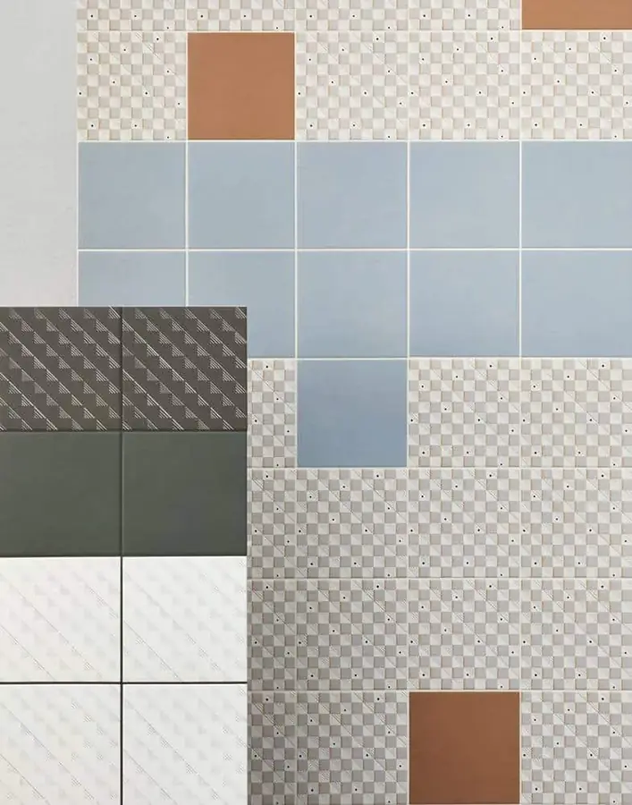
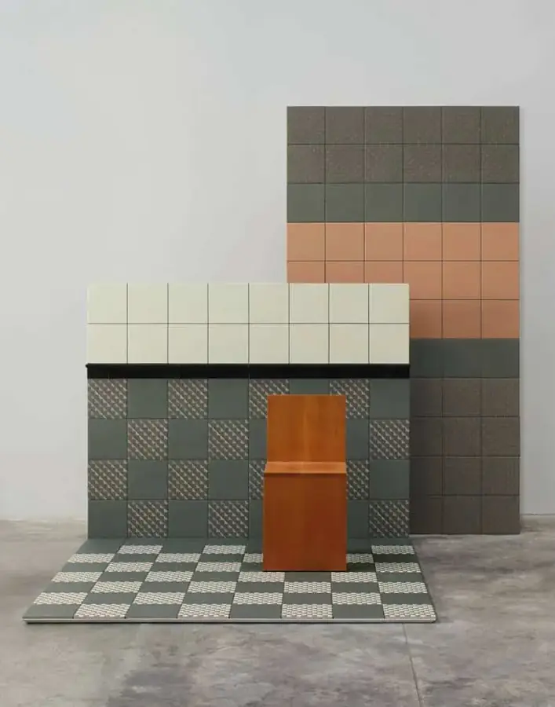
MosaicoMosaicos geométricos 20x20 Dintorni – Mutina
Nueva colección de mosaicos en tamaño 20×20 cm con una sensibilidad gráfica singular que nace desde la búsqueda de nuevas formas de expresión.
El resultado de combinar estampados con patrones geométricos (Scala, Bandiere y Dama), bases sólidas de transición y azulejos ilustrados (Isola).
Una colección de modulaciones cromáticas que genera ritmos visuales envolventes y genuinos en distintas tonalidades.
Su paleta y diseño invitan a crear superficies decorativas complejas, ideales para proyectos que buscan carácter sin recurrir a soluciones evidentes.
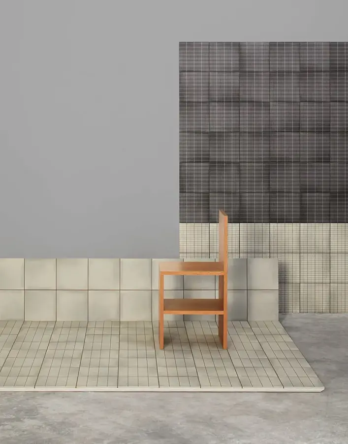
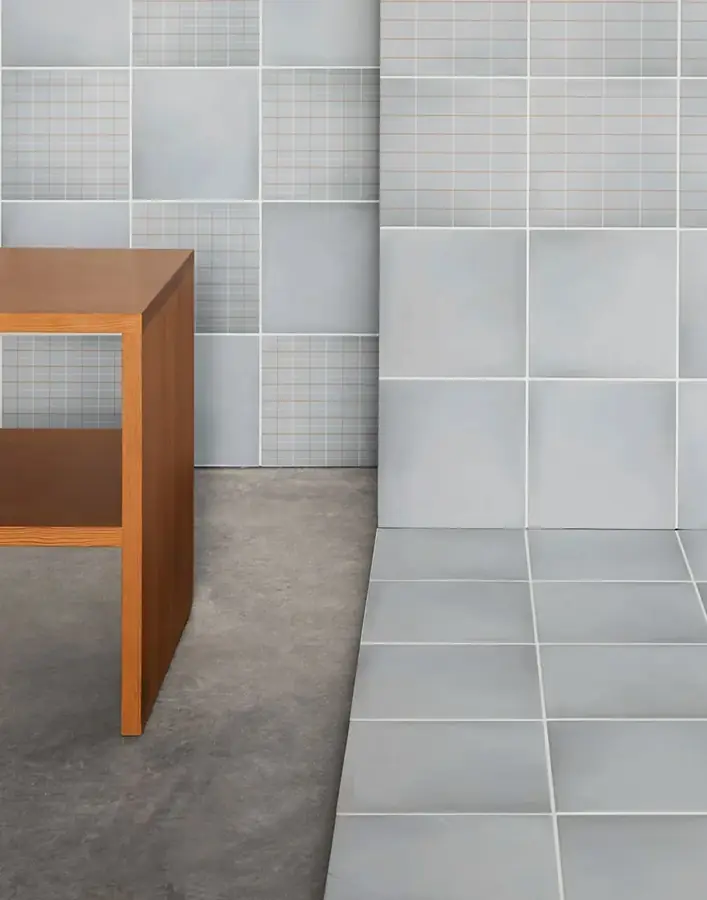
MosaicoMosaicos 20x20 Aurore – Mutina
Colección cerámica en formato cuadrado de 20×20 cm. Aurore interpreta la memoria del trazo a mano alzada con tiza, líneas rectas con efecto sobrepuesto debido al uso de colores opuestos.
Tres diseños de mosaicos que combinan entre sí: liso, malla ancha (Grid L) y malla estrecha (Grid S), todos ellos disponibles en cuatro versiones de tonalidades suaves: azul claro, verde claro, gris claro y carbón.
Recomendada para espacios que necesiten texturas sutiles, ritmo gráfico y una estética artesanal controlada.
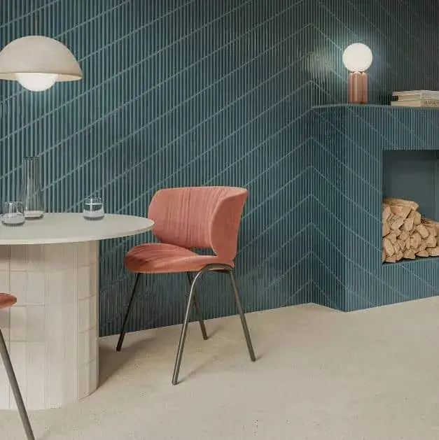
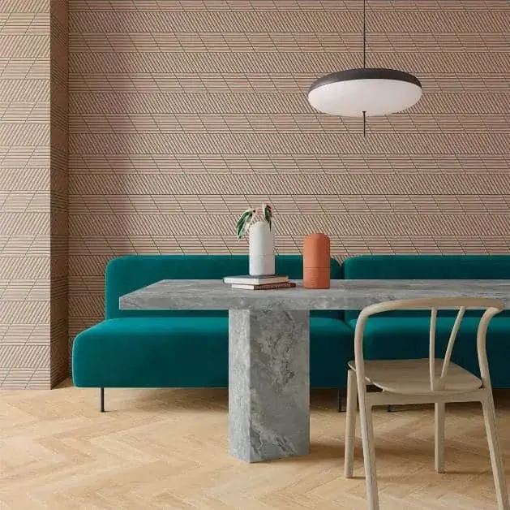
MosaicoSpike Bars Collection – WOW Design
La Spike Bars Collection de WOW Design da un giro audaz a la reconocida serie Sweet Bars, integrando un innovador diseño diagonal que destaca en cualquier espacio.
Esta línea presenta un juego de texturas, con opciones de acabados mate y brillo que acentúan sus tonos, ideales tanto para ambientes contemporáneos como más clásicos.
La colección es una invitación a experimentar con patrones y colores que aportan profundidad y estilo, ofreciendo una versatilidad que permite integrar detalles únicos en interiores actuales.
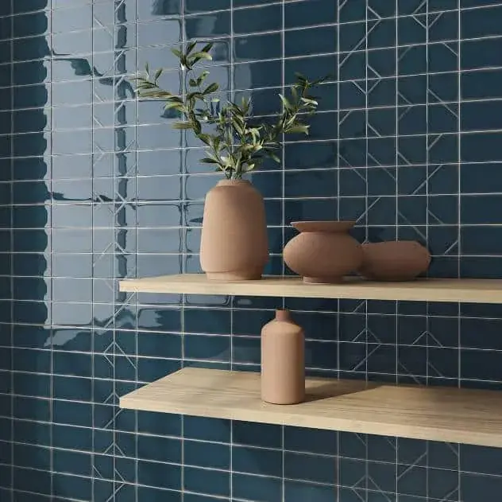
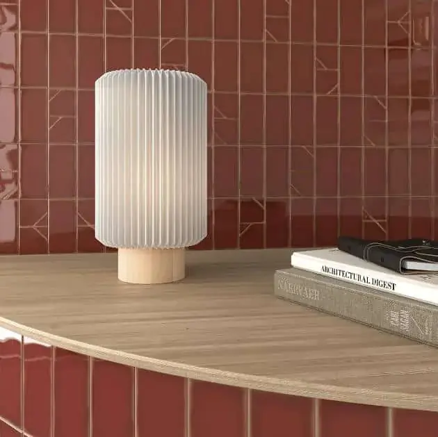
MosaicoYōko Collection – WOW Design
WOW Design nos acerca a la cultura japonesa con su reciente colección Yōko, una serie inspirada en la práctica artesanal del origami, creada para brindar serenidad y belleza a cualquier lugar.
Yöko captura la serenidad y la suavidad de este arte japonés, inspirándose en el nombre «Yoko», que alude a la naturaleza y al mar. Esta serie presenta texturas delicadas que evocan a los pliegues del papel.
Como resultado, varios modelos de piezas con formas variadas esmaltadas en acabados cristalinos que generan contrastes entre las tonalidades de las piezas y sus bordes.
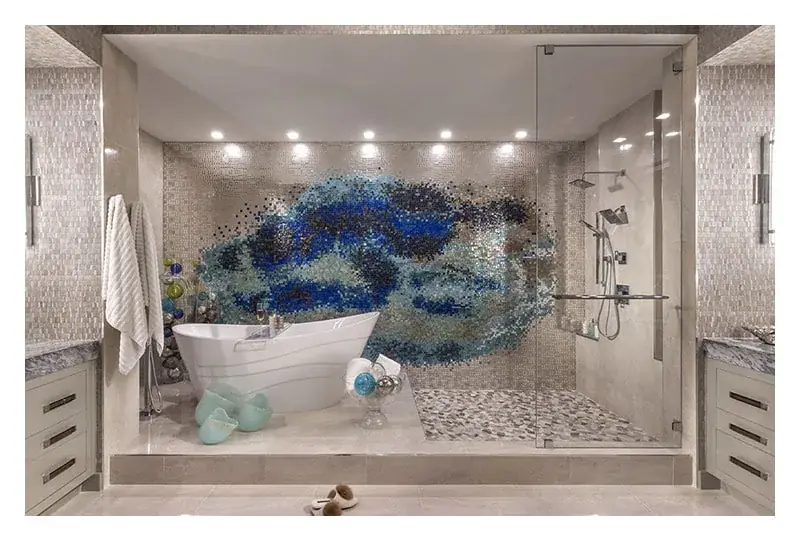
MosaicoMosaicos estilo spa rincón - Sicis
Cada vez más buscamos encontrar en nuestro hogar un lugar de desconexión. Crear rincones que inciten a ello se convierte en una necesidad para este año.
Sicis apuesta por esta tendencia y lanza su colección de Mosaicos Rincón, estilo spa.
Materiales en tonos relajantes como el gris claro, el beige o el azul que, combinados con otros de origen natural como la madera o la piedra, ayudan a crear esta atmósfera relajante.
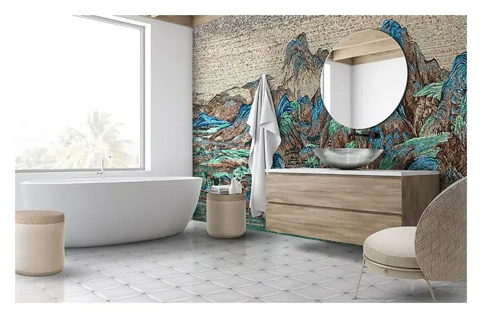
MosaicoMosaicos sostenibles - Sicis
La elección de materiales respetuosos con el medio ambiente siempre es un acierto. Pero si además te garantizan durabilidad y facilidad en el mantenimiento, se convierte en la mejor opción.
Sicis lanza su colección de Mosaicos sostenibles para el revestimiento de paredes para baños.
Materiales con origen natural y reciclados que te aseguran un buen aspecto y funcionalidad durante mucho tiempo.
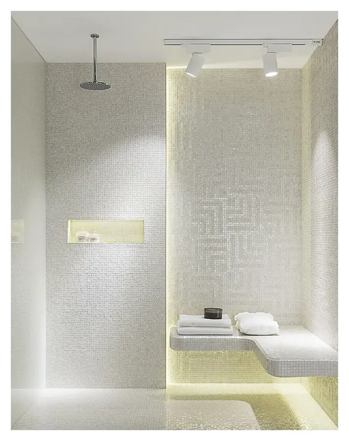
MosaicoMosaicos blancos - Sicis
Mosaicos en blanco para sacar tu parte más creativa. Sicis apuesta por este color como base para crear baños personalizables y únicos.
Un color versátil que permite ser combinado con multitud de opciones y que todas ellas se integren a la perfección. Convierte esta estancia en un oasis de paz y tranquilidad donde recargar energía, gracias a la pureza del blanco.
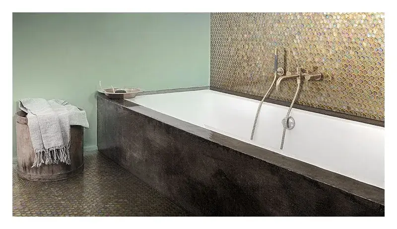
MosaicoMosaicos de colores pastel - Sicis
Un poco de color para alegrar cualquier estancia. Sicis se suma a las tendencias para este año y lanza su gama de mosaicos en tonos pastel: verde, azul…
Colores tenues que transmiten serenidad, y a la vez le dan un toque diferente al baño creando un ambiente ideal para dedicarse a uno mismo.
Para gustos más conservadores, son fácilmente combinables con otros mosaicos en tonos blancos.
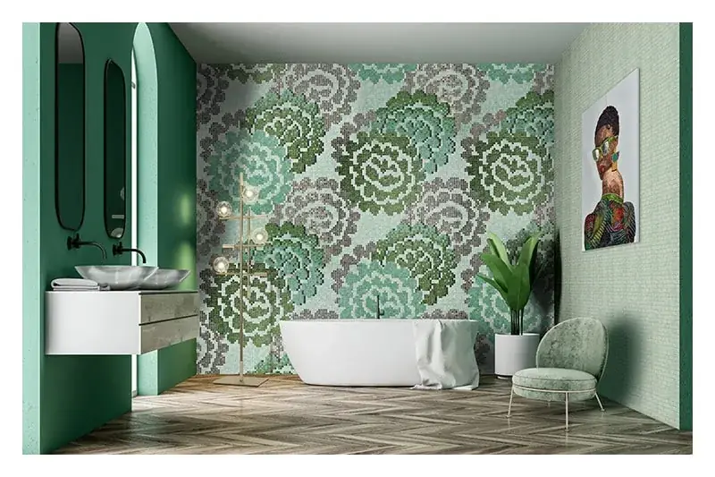
MosaicoMosaicos con decoraciones de acento - Sicis
Para quienes son más atrevidos, Sicis apuesta por el color y crea su colección de mosaicos más decorativa.
Piezas únicas con las que conseguir una pared de acento y dotarla de protagonismo respecto al resto de paredes del espacio.
El uso de este tipo de material ayuda a diferenciar cualquier estancia, construyendo este perseguido impacto visual y aportando una gran personalidad, a la vez que te garantiza un mantenimiento fácil y práctico.
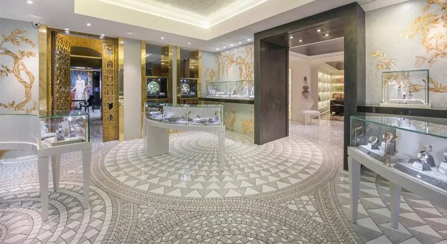
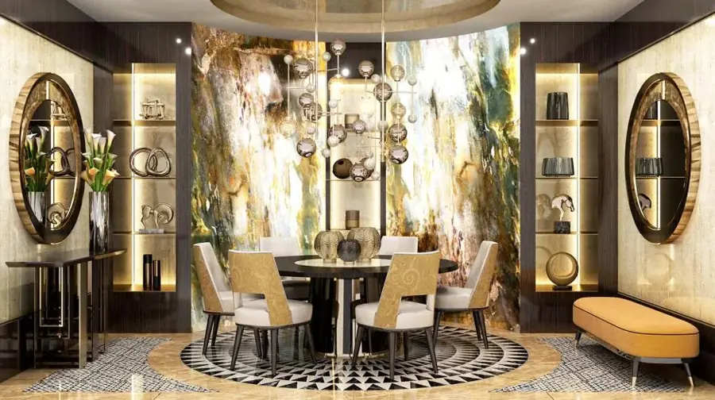
MosaicoMosaico de mármol Cosmati - Sicis
Geometría, mármoles y piedras naturales. Una colección inspirada en la ornamentación típica de los marmolistas romanos de la Edad Media, que hace más de siete siglos decoraron las más elegantes iglesias y los palacios de la nobleza.
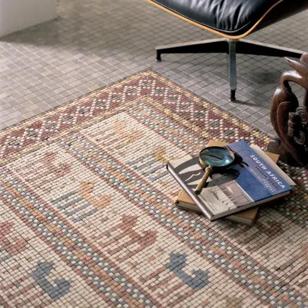
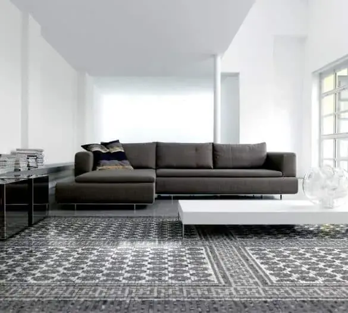
MosaicoMosaico de mármol The Mosaic Rug – Sicis
Elaboradas completamente a mano. Alfombras de piedra y mármol inspiradas en la antigua Roma para crear espacios únicos, con aroma a la elegancia de lo clásico en sintonía con lo moderno.
- Mosaico
Pavimentos y revestimientos porcelánicos Colección Quilt - MosaicoPiu
Quilt es un edredón de cuadrados de gres porcelánico desarrollado en tres tonos básicos (Chalk, Clay y Mud) disponibles cada uno de ellos en variante estructurada o suave.
Permite el enriquecimiento con otras variantes de gama de distintos colores (Ocre, Cameo, SugarPaper para QuiltChalk, Mud para QuiltClay y Slate para QuiltMud).
Cuadrados de 9×9 grabados que permiten la configuración de la gráfica según la necesidad estética del espacio.
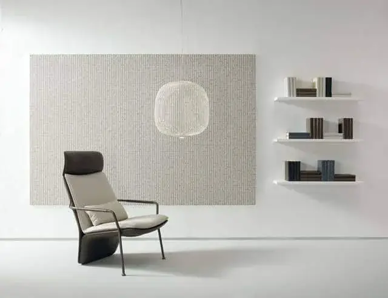
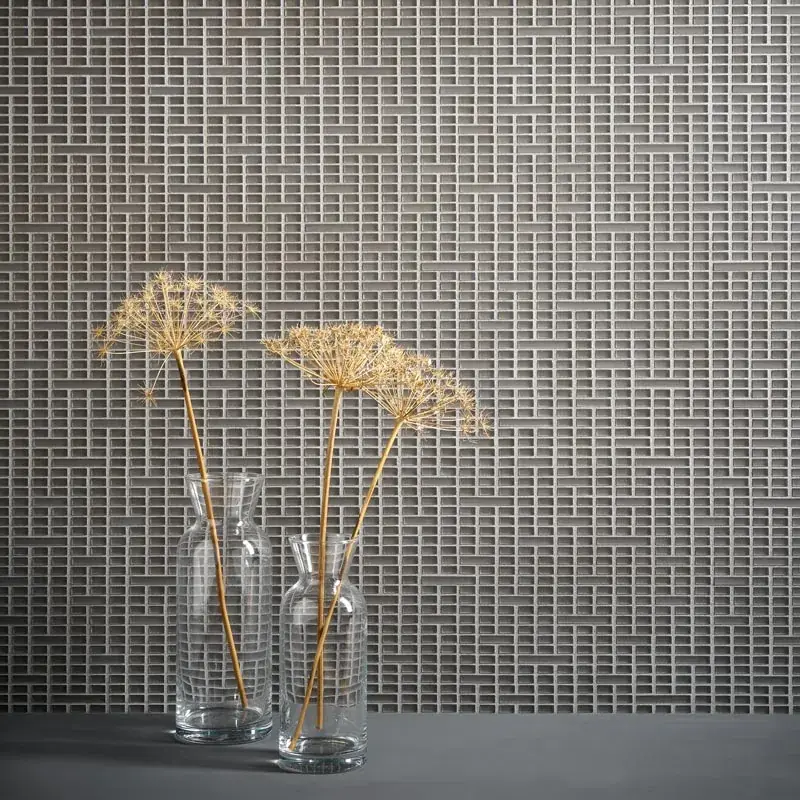
MosaicoPavimentos y revestimientos Mist – MosaicoPiu
Una nueva manera de ver el mosaico tradicional, a través de un juego visual donde nada es lo que parece. Una combinación de piezas única, que cambia de estética según el lugar desde donde se observa.
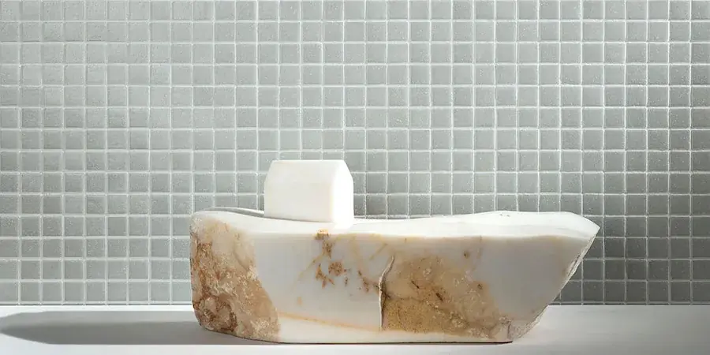
MosaicoRevestimientos Tanticolori – MosaicosPiu
Tanticolori es una novedad de revestimientos para baños que se ofrece en 9 colores (con sus distintas tonalidades por color). Un juego de piezas pequeñas cuadradas biseladas de cuatro milímetros de espesor en 20×20 mm. Esta colección, que usa el juego de cromatismos como base creativa, está montada sobre malla de fibra de vidrio para formar una lámina de 327 × 327 mm.
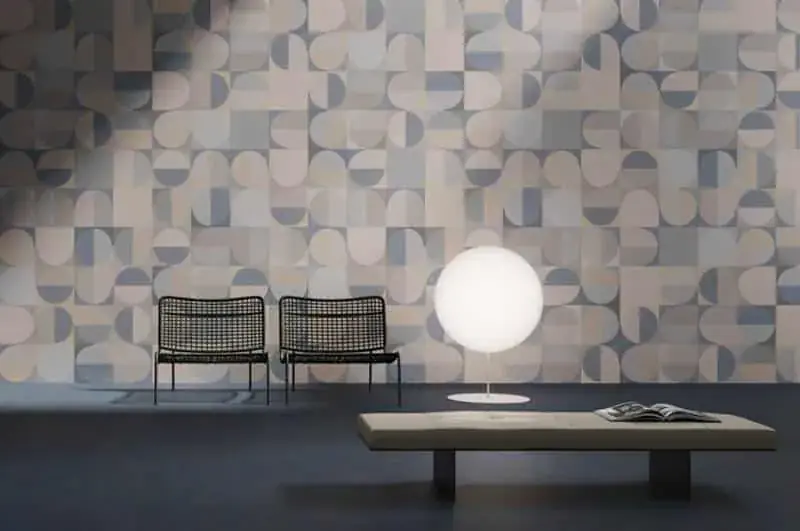
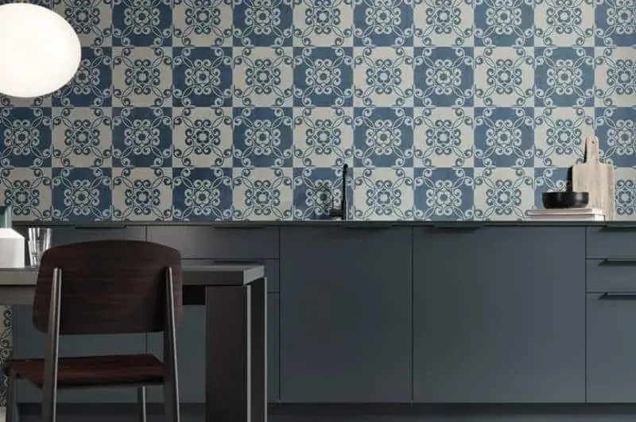
MosaicoRevestimientos Storywall - Granorte
Con Storywall, GRANORTE pone en valor las paredes de corcho, en perfecta sintonía con las nuevas técnicas industriales capaces de crear gráficas impensables.
Una bella colección, de instalación pegada, de gran variedad en propuestas estéticas, de corcho natural reciclado, lacado en base de agua, que se presenta en 570x570x4 mm.
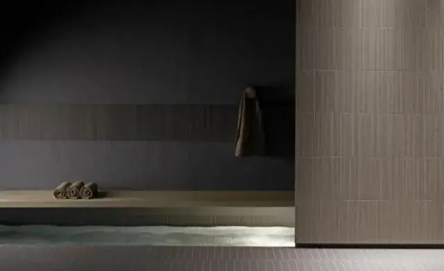
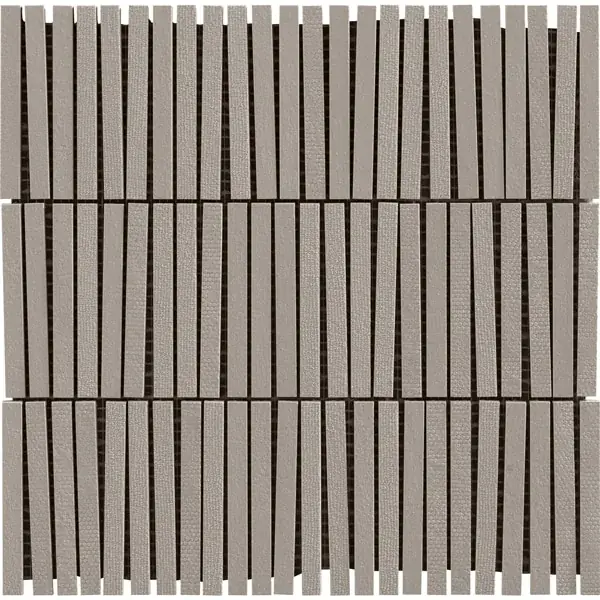
MosaicoRevestimientos Sticks - MosaicoPiu
Sticks es una colección de módulos de gres porcelánico de cuerpo completo, en tono yeso, arcilla, humo y carbón, adecuados para incorporar en paredes interiores y exteriores.
Procedente de material prensado, cortado en diversos formatos (5×30 cm, 1x30cm, 1x10cm), destacan sus acabados superficiales.
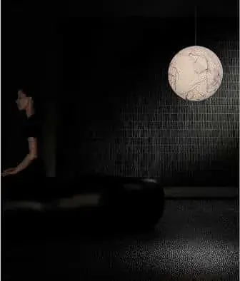
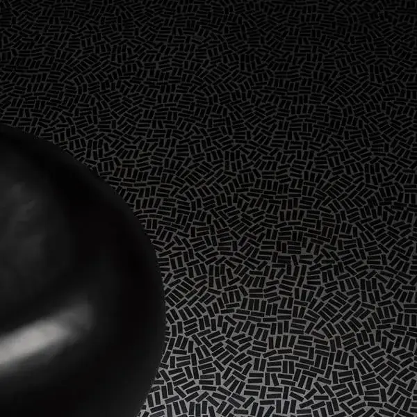
MosaicoPavimentos y revestimientos Saico – MosaicoPiu
El concepto del mosaico tradicional veneciano reinventado. Piezas de 1×3 cms, en fragmentos con forma de stick, colocados “aleotaria e irregularmente”, que aportan movimiento a la par que tridimensionalidad al suelo.
Una interesante propuesta de los italianos Mosaicopiu.
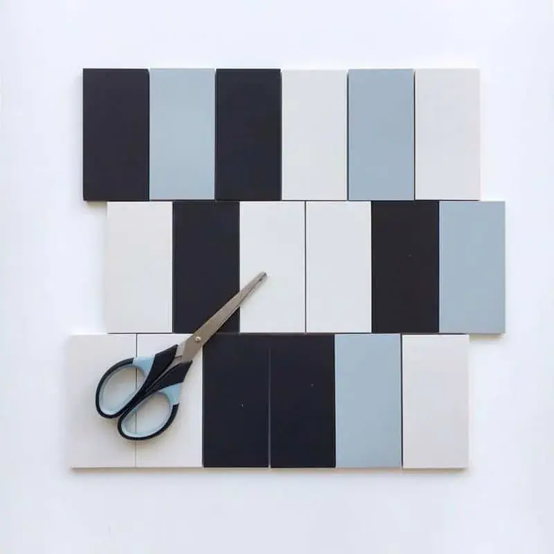
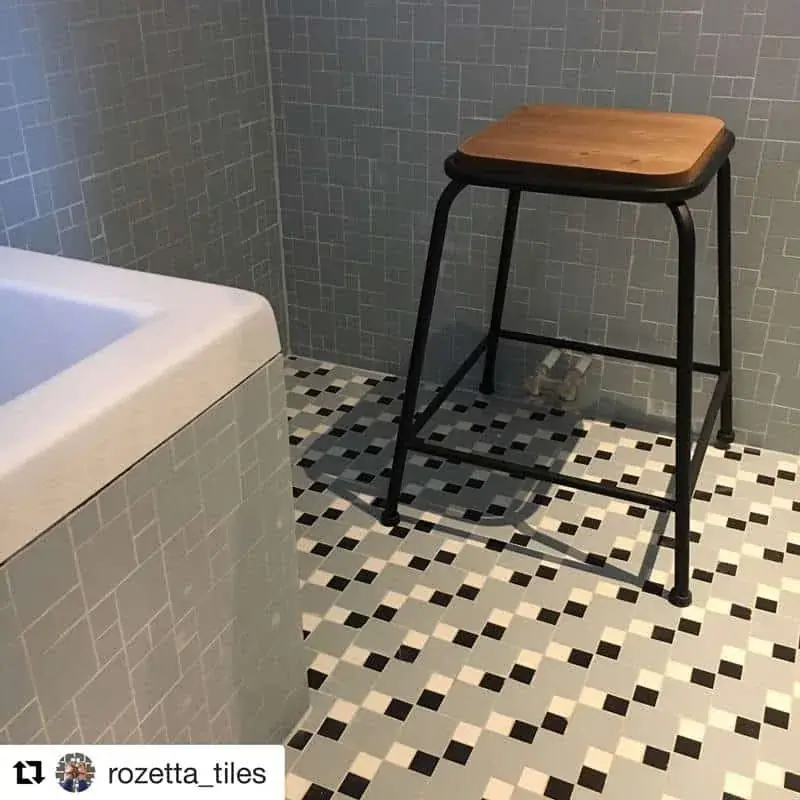
MosaicoMosaicos y azulejos micro – Micro Tiles
¿Conoces la expresión: en el pote pequeño está la buena confitura?
Desde Italia, progettomicro pretende aportar colecciones de azulejos y mosaicos de lo más atractivos, pero apostando por el tamaño micro.
De momento lo están consiguiendo con las interesantes colecciones que han presentado en 2018.
Ligereza, resistencia y moldeabilidad describen a la perfección esta nueva propuesta de pavimentos y revestimientos porcelánicos, creados por alguno de los mejores diseñadores del mundo.